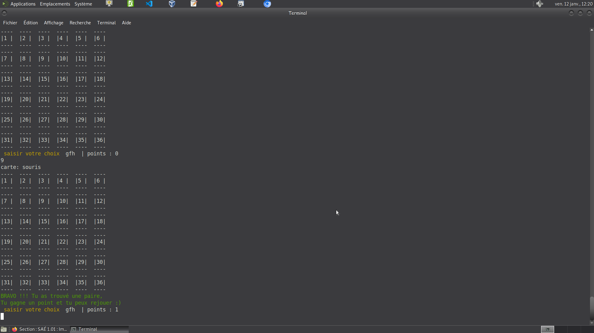
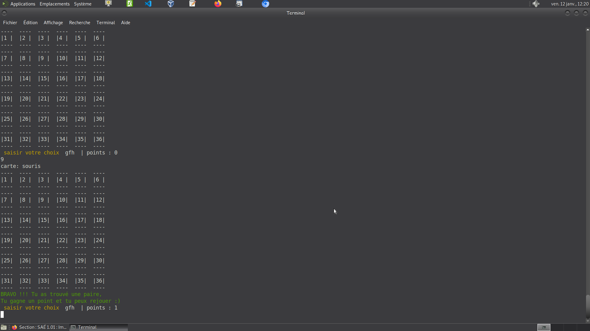

À propos de moi
Je m'appelle Rémi Poupard--Ramaut, étudiant en première année de BUT Informatique à l'IUT A de Lille.
Mon parcours académique m'a déjà permis d'acquérir des bases solides en programmation grâce à la spécialité NSI.
À travers ce site, je souhaite partager avec vous ma passion pour l'informatique et vous inviter à découvrir mes projets, mes compétences et mes aspirations. Que ce soit le développement ou la conception de sites web, je m'efforce constamment de m'améliorer.
En dehors de l'informatique, j'aime explorer de nouvelles idées créatives, partager des moments à travers la musique, m'engager dans des projets défendant mes valeurs.
N'hésitez pas à parcourir mon site pour en savoir plus sur mon parcours, mes projets, et la manière dont je peux contribuer à vos initiatives. Je suis ouvert aux opportunités de collaboration, alors n'hésitez pas à me contacter pour discuter de vos idées et projets.
Merci de prendre le temps de découvrir mon site. Au plaisir d'échanger avec vous !

 

Projets récents et services
Ce premier projet est un jeu de Memory codé à l'IUT avec un camarade de classe. Il est actuellement sur GitHub.
Il se joue sur terminal, avec un affichage réalisé en ASCII
lien du repertoire sur GitHubContactez-moi
N'hésitez pas à me contacter pour toute commande particulière ou simplement demander des informations...